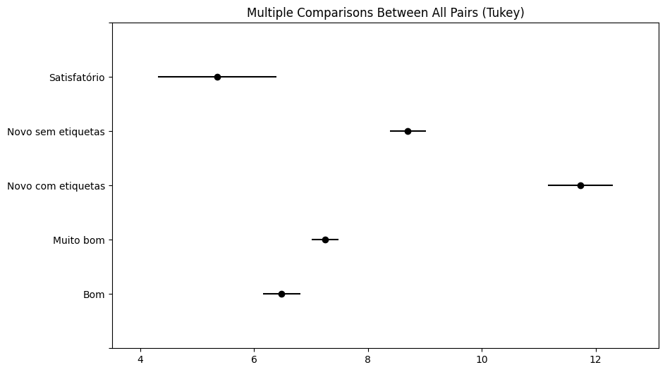

import pandas as pd
from sqlalchemy import create_engine
import os
import json
import ipywidgets as widgets
from IPython.display import display
import plotly.express as px
def load_credentials(path = "aws_rds_credentials.json"):
with open(path, 'r') as file:
config = json.load(file)
# set up credentials
for key in config.keys():
os.environ[key] = config[key]
return
load_credentials()
aws_rds_url = f"postgresql://{os.environ['user']}:{os.environ['password']}@{os.environ['host']}:{os.environ['port']}/{os.environ['database']}?sslmode=require"
# Load a sample dataset
def load_data():
engine = create_engine(aws_rds_url)
sql_query = f"""SELECT price_numeric,
brand_title,
size_title,
user_id,
product_id,
catalog_id,
status
FROM public.tracking_staging
WHERE brand_title IN (
SELECT brand_title
FROM public.tracking_staging
WHERE date >= CURRENT_DATE - INTERVAL '7 DAY'
GROUP BY price_numeric, brand_title
HAVING COUNT(DISTINCT(product_id)) > 30
)
LIMIT 10000;
"""
df = pd.read_sql(sql_query, engine)
return (df)
data = load_data()
data.head(10)
---------------------------------------------------------------------------
ModuleNotFoundError Traceback (most recent call last)
Cell In[1], line 5
3 import os
4 import json
----> 5 import ipywidgets as widgets
6 from IPython.display import display
7 import plotly.express as px
ModuleNotFoundError: No module named 'ipywidgets'
# Define dropdown widget for brand selection
brand_dropdown = widgets.Dropdown(options=data["brand_title"].unique(),
description='Select the brand:')
# Define function to update metrics based on selected brand
def update_metrics(change):
selected_brand = change.new
filtered_data = data[data['brand_title'] == selected_brand]
products = filtered_data['product_id'].nunique()
median_price = "{:.2f} €".format(filtered_data['price_numeric'].median())
std_dev = "{:.2f} €".format(filtered_data['price_numeric'].std())
total_volume = "{:.2f} €".format(filtered_data['price_numeric'].sum())
products_widget.value = products
median_price_widget.value = median_price
std_dev_widget.value = std_dev
total_volume_widget.value = total_volume
# Attach observer to brand dropdown
brand_dropdown.observe(update_metrics, names='value')
products_widget = widgets.IntText(description='Products:', disabled=True)
active_users_widget = widgets.IntText(description='Active Users:', disabled=True)
median_price_widget = widgets.Text(description='Median Price:', disabled=True)
std_dev_widget = widgets.Text(description='Standard Dev.:', disabled=True)
total_volume_widget = widgets.Text(description='Total Volume:', disabled=True)
# Arrange widgets in a grid layout
grid = widgets.GridspecLayout(6, 1, width='100%')
grid[0, 0] = products_widget
grid[1, 0] = median_price_widget
grid[2, 0] = std_dev_widget
grid[3, 0] = total_volume_widget
# Display widgets
display(brand_dropdown)
display(grid)
print(data["price_numeric"].skew())
# preprocessing for visualization purposes
q_high = data["price_numeric"].quantile(0.95)
q_low = data["price_numeric"].quantile(0.01)
data = data[(data["price_numeric"] < q_high) &
(data["price_numeric"] > q_low)]
8.982185754190313
fig = px.histogram(data,
x="price_numeric",
marginal="box",
barmode= "overlay",
facet_col="status",
category_orders={"status":["Satisfatório", "Bom", "Muito bom", "Novo sem etiquetas", "Novo com etiquetas"]})
fig
Kruskal-Wallis Test: non-parametric alternative to ANOVA. It compares the medians of three or more groups to determine if there are significant differences.
The dataset doesn’t fit ANOVA criteria, so let’s go with a non parametric test to assess distributions between status. Because there are 3 or more groups, it’s more suitable than Kolmogorov-Smirnov Test.
from scipy.stats import kruskal
# Separate data by status groups
status_groups = [data[data['status'] == status]['price_numeric'] for status in data['status'].unique()]
# Perform Kruskal-Wallis test
statistic, p_value = kruskal(*status_groups)
# Print results
print("Kruskal-Wallis Test:")
print(f"Statistic: {statistic}, p-value: {p_value}")
if p_value < 0.05:
print("Reject null hypothesis: distributions are different (p_value < alfa)")
else:
print("Fail to reject null hypothesis: distributions are similar")
Kruskal-Wallis Test:
Statistic: 403.0747917522124, p-value: 6.0245733396409355e-86
Reject null hypothesis: distributions are different (p_value < alfa)
Tukey’s HSD (Honestly Significant Difference)
When conducting a Tukey HSD test, we compare all possible pairs of group means to determine whether any pair differs significantly. If the test results in a rejection of the null hypothesis for a particular pair of groups, it indicates that there is a statistically significant difference between the means of those groups.
\(H0: μ_1=μ_2=μ_3=…=μk\)
Overall, the Tukey HSD test helps identify which specific group means are different from each other after conducting an ANOVA test. (Tukeys is usually a completary test - adhoc)
from statsmodels.stats.multicomp import pairwise_tukeyhsd
#manova = MANOVA(endog=data[["brand_title", "status", "size_title", "catalog_id"]],
# exog=data["price"].astype(float))
#print(manova.mv_test())
#topbrands = data['brand_title'].value_counts().nlargest(30)
#filter = topbrands.index.tolist()
#data = data[data['brand_title'].isin(filter)]
tukey_result = pairwise_tukeyhsd(endog=data['price_numeric'],
groups=data['status'],
alpha=0.05)
print(tukey_result.summary())
Multiple Comparison of Means - Tukey HSD, FWER=0.05
============================================================================
group1 group2 meandiff p-adj lower upper reject
----------------------------------------------------------------------------
Bom Muito bom 0.7637 0.0008 0.2341 1.2933 True
Bom Novo com etiquetas 5.2515 0.0 4.3254 6.1776 True
Bom Novo sem etiquetas 2.2213 0.0 1.5841 2.8584 True
Bom Satisfatório -1.1285 0.1723 -2.5156 0.2585 False
Muito bom Novo com etiquetas 4.4878 0.0 3.6459 5.3298 True
Muito bom Novo sem etiquetas 1.4576 0.0 0.9504 1.9647 True
Muito bom Satisfatório -1.8922 0.001 -3.2245 -0.5599 True
Novo com etiquetas Novo sem etiquetas -3.0303 0.0 -3.9437 -2.1168 True
Novo com etiquetas Satisfatório -6.38 0.0 -7.9138 -4.8463 True
Novo sem etiquetas Satisfatório -3.3498 0.0 -4.7284 -1.9712 True
----------------------------------------------------------------------------
Reject: whether to reject null hypothesis. True, we reject null hypothesis, meaning the diff in the group means are different.
meandiff: The mean difference between the two groups.
p-adj: The adjusted p-value after correcting for multiple comparisons.
lower and upper: The lower and upper bounds of the confidence interval for the mean difference.
tukey_result.plot_simultaneous()
